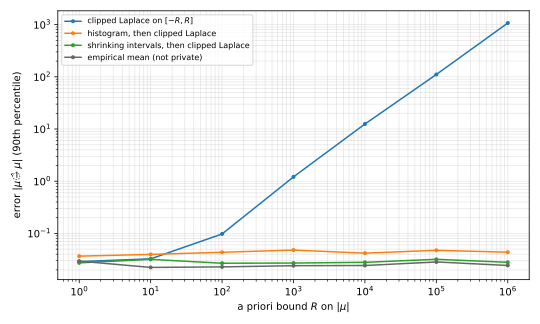
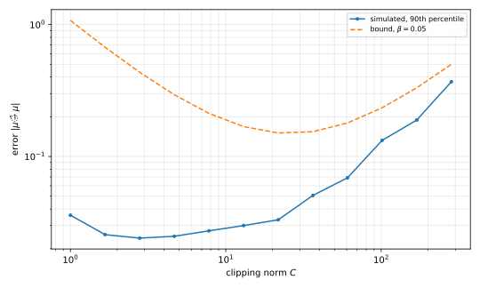

15 Private Mean Estimation
Earlier chapters estimated properties of a fixed dataset. In statistics, the dataset is a sample, and the goal is a property of the distribution that generated it. This chapter asks how many samples an algorithm with differential privacy (DP) needs to estimate the mean of a distribution to within \(\alpha\). It also asks how much more that is than without privacy.
For bounded data, privacy costs a lower-order term. Unbounded data needs prior knowledge, at least a bound \(R\) on the mean. Clipping to \([-R, R]\) costs samples linear in \(R\), but an algorithm that first locates the data costs only samples logarithmic in \(R\). For heavy-tailed data, the clipping must introduce bias, and the price of privacy grows.
15.1 The mean of a dataset and of a distribution
The chapter uses two facts from earlier chapters. A Laplace variable with scale \(b\), written \(Z \sim \mathrm{Lap}(b)\), has density proportional to \(e^{-|z|/b}\), so its tail is
\[ \Pr[|Z| > t] = e^{-t/b} \qquad (t \ge 0). \tag{15.1}\]
The Laplace mechanism privatizes a function \(f\) of the dataset with values in \(\mathbb R^d\). Its sensitivity \(\Delta_1 f\) is the largest change that the replacement of one record can cause,
\[ \Delta_1 f = \max_{D \sim D'} \|f(D) - f(D')\|_1 . \tag{15.2}\]
If \(\Delta_1 f\) is finite, the release of \(f(D)\) plus independent \(\mathrm{Lap}(\Delta_1 f/\varepsilon)\) noise in each coordinate is \(\varepsilon\)-DP.
Start with bits. Each of the \(n\) records is a bit \(X_i \in \{0,1\}\), and their empirical mean is \(\tilde p = \frac1n \sum_i X_i\). A replaced bit moves \(\tilde p\) by at most \(1/n\), so the Laplace mechanism releases
\[ \hat p = \tilde p + \mathrm{Lap}\!\left(\frac{1}{\varepsilon n}\right). \tag{15.3}\]
Now suppose the bits are a sample, \(X_1, \dots, X_n\) independent draws from \(\mathrm{Bern}(p)\), and the target is the unknown \(p\).
Theorem 15.1 (Private Bernoulli mean) The estimator Equation 15.3 is \(\varepsilon\)-DP. If \(X_1, \dots, X_n\) are independent \(\mathrm{Bern}(p)\) variables, then for every \(\beta \in (0,1)\), with probability at least \(1 - \beta\),
\[ |\hat p - p| \le \sqrt{\frac{\ln(4/\beta)}{2n}} + \frac{\ln(2/\beta)}{\varepsilon n}. \tag{15.4}\]
Proof.
- Privacy is the Laplace mechanism with sensitivity \(1/n\).
- By the triangle inequality, \(|\hat p - p| \le |\tilde p - p| + |\hat p - \tilde p|\).
- The bits are independent, take values in \([0,1]\), and have mean \(p\). Hoeffding’s inequality gives \(\Pr[|\tilde p - p| > t] \le 2e^{-2nt^2}\), which equals \(\beta/2\) at \(t = \sqrt{\ln(4/\beta)/(2n)}\).
- The noise \(\hat p - \tilde p\) is \(\mathrm{Lap}(1/(\varepsilon n))\), so by the Laplace tail it exceeds \(\ln(2/\beta)/(\varepsilon n)\) with probability \(\beta/2\).
- A union bound over the two failures gives the claim.
Each term is at most \(\alpha/2\) once
\[ n \ge \frac{2\ln(4/\beta)}{\alpha^2} + \frac{2\ln(2/\beta)}{\alpha\varepsilon}, \tag{15.5}\]
so \(n = O(1/\alpha^2 + 1/(\alpha\varepsilon))\) samples are enough for a fixed \(\beta\). The first term is the sample complexity without privacy, and the second is the cost of privacy. For a constant \(\varepsilon\) and small \(\alpha\), the cost of privacy is smaller by a factor of \(\alpha\), so here privacy is nearly free. The proof split the error into the sampling error \(\tilde p - p\), present without privacy, and the noise error \(\hat p - \tilde p\) that privacy adds. That split recurs in the chapter.
15.2 Unbounded data
The Bernoulli case was easy because each record lies in \([0,1]\). Take instead real records, such as heights in centimetres. If one height of \(160\) is replaced by a recorded \(10^5\), the empirical mean moves by about \(10^5/n\), and nothing bounds the move. So the empirical mean has infinite sensitivity. The next result shows that no private algorithm can fix that. It uses group privacy. If a mechanism \(M\) is \(\varepsilon\)-DP and two datasets \(D, D'\) differ in \(k\) entries, then for every event \(S\),
\[ \Pr[M(D)\in S] \le e^{k\varepsilon}\Pr[M(D')\in S], \tag{15.6}\]
by the definition applied along a path of \(k\) neighbours. So every \(\varepsilon\)-DP algorithm is far from the empirical mean on some real dataset, however large the allowed error \(\alpha\).
Proposition 15.1 Let \(M \colon \mathbb R^n \to \mathbb R\) be \(\varepsilon\)-DP and \(\alpha > 0\). Some dataset \(D \in \mathbb R^n\) has \(\Pr[|M(D) - \bar X| \le \alpha] < 1/2\), where \(\bar X\) is its empirical mean.
Proof.
- Suppose instead that \(\Pr[|M(D) - \bar X| \le \alpha] \ge 1/2\) for every \(D\). Take an integer \(m > 2e^{\varepsilon n}\) and, for \(j = 0, \dots, m-1\), the dataset \(D^{(j)}\) whose \(n\) entries all equal \(3\alpha j\), so that its empirical mean is \(3\alpha j\).
- The intervals \(I_j = [3\alpha j - \alpha, 3\alpha j + \alpha]\) are disjoint, and \(\Pr[M(D^{(j)}) \in I_j] \ge 1/2\) by assumption.
- The datasets \(D^{(0)}\) and \(D^{(j)}\) differ in \(n\) entries, so group privacy gives \(\Pr[M(D^{(0)}) \in I_j] \ge e^{-\varepsilon n}/2\).
- The sum over the disjoint intervals gives \(1 \ge m e^{-\varepsilon n}/2 > 1\), a contradiction.
The way out is prior knowledge that does not come from the data. No human is taller than \(300\) cm, so the algorithm can force each height into \([0, 300]\) before the average.
Definition 15.1 (Clipping) For \(u \le v\), the clipping map onto \([u,v]\) is \(g_{[u,v]}(x) = \min(\max(x, u), v)\). It leaves points of \([u,v]\) unchanged and moves every other point to the nearer endpoint.
Clipping to a range fixed in advance bounds how far one record can move the mean, so the Laplace mechanism applies to the clipped mean.
Lemma 15.1 Let \(u < v\) be fixed before seeing the data, and let \(g_{[u,v]}\) be the clipping map of Definition 15.1. The estimator
\[ M(D) = \frac1n \sum_{i=1}^n g_{[u,v]}(X_i) + \mathrm{Lap}\!\left(\frac{v-u}{\varepsilon n}\right) \tag{15.7}\]
is \(\varepsilon\)-DP. If every \(X_i\) lies in \([u,v]\), then \(|M(D) - \bar X| \le (v-u)\ln(1/\beta)/(\varepsilon n)\) with probability at least \(1-\beta\).
Proof.
- Each clipped value lies in \([u,v]\), so a replaced record moves the clipped mean by at most \((v-u)/n\). The Laplace mechanism gives privacy.
- If every \(X_i\) lies in \([u,v]\), clipping changes nothing, and \(M(D) - \bar X\) is the Laplace noise, whose tail gives the bound.
With heights in \([0, 300]\), \(n = 1{,}000\) and \(\varepsilon = 1\), the noise scale is \(300/1{,}000 = 0.3\) cm. Fix the range before you see the data. A range chosen after a look, for example to exclude one absurd record, depends on that record, and the guarantee no longer holds.
15.3 Estimating a parameter of a distribution
From here on the data is a sample from an unknown distribution, and the target is the mean of that distribution. An estimator must be private on every dataset, and accurate on samples from the distribution.
Definition 15.2 (Private estimation) Let \(\mathcal P\) be a class of distributions on \(\mathbb R\), each with a mean \(\mu(P)\). An algorithm \(M \colon \mathbb R^n \to \mathbb R\) is an \(\varepsilon\)-DP \((\alpha, \beta)\)-estimator for \(\mathcal P\) if
- \(M\) is \(\varepsilon\)-DP, as a map on all datasets in \(\mathbb R^n\), and
- for every \(P \in \mathcal P\), if \(X_1, \dots, X_n\) are independent draws from \(P\), then \(\Pr[|M(D) - \mu(P)| \le \alpha] \ge 1 - \beta\).
The smallest such \(n\) is the sample complexity of the class.
Privacy is a worst-case guarantee. It holds even for a dataset that has probability zero under every \(P \in \mathcal P\). So the people in the dataset do not pay if the model of the analyst is wrong. Accuracy, in contrast, is an average over samples from \(P\), and it needs assumptions on \(P\) even without privacy. For example, a Cauchy distribution has no mean, and the empirical mean of its samples does not converge.
The main class is the Gaussians with unit variance and a bounded mean,
\[ \mathcal G_R = \{\, \mathcal N(\mu, 1) : |\mu| \le R \,\}. \tag{15.8}\]
A bound on the mean plays the role of the range of heights. The argument of Proposition 15.1 shows that some bound is necessary.
Proposition 15.2 Let \(\alpha > 0\), \(\beta \in (0,1)\), and \(m = \lfloor 2R/(3\alpha) \rfloor + 1\). Every \(\varepsilon\)-DP \((\alpha,\beta)\)-estimator for \(\mathcal G_R\) uses
\[ n \ge \frac{\ln\big((1-\beta)m\big)}{\varepsilon} \tag{15.9}\]
samples. Without a bound on \(|\mu|\) (\(R = \infty\)), no finite \(n\) suffices.
Proof.
- The means \(\mu_j = -R + 3\alpha j\), for \(j = 0, \dots, m-1\), lie in \([-R, R]\), and the intervals \(I_j = [\mu_j - \alpha, \mu_j + \alpha]\) are disjoint.
- Let \(D\) be a sample from \(\mathcal N(\mu_0, 1)\) and set \(D^{(j)} = D + (\mu_j - \mu_0)\), which shifts every entry. Then \(D^{(j)}\) is a sample from \(\mathcal N(\mu_j, 1)\), and it differs from \(D\) in all \(n\) entries.
- For each fixed \(D\), group privacy gives \(\Pr_M[M(D) \in I_j] \ge e^{-\varepsilon n}\Pr_M[M(D^{(j)}) \in I_j]\). The average over \(D\), with accuracy for \(\mathcal N(\mu_j, 1)\), gives \(\Pr[M(D) \in I_j] \ge e^{-\varepsilon n}(1-\beta)\).
- The intervals are disjoint, so the sum over \(j\) gives \(1 \ge m e^{-\varepsilon n}(1-\beta)\). This inequality, solved for \(n\), gives the bound, and \(m = \infty\) when \(R = \infty\).
So a term of order \(\ln(R/\alpha)/\varepsilon\) is unavoidable, and the rest of the chapter finds algorithms that pay little more than that.
15.4 Clipping the Gaussian
A bound on the mean is not a bound on the records. But with the light tails of the Gaussian, it gives one with high probability. The lemma below adapts part 3 of Lemma 5.3 in the approximate DP chapter, which says that a standard normal \(W\) has \(\Pr[W > u] \le e^{-u^2/2}\) for every \(u \ge 0\), to both tails.
Lemma 15.2 (Gaussian tail) If \(Y \sim \mathcal N(0,1)\) and \(t \ge 0\), then \(\Pr[|Y| \ge t] \le 2e^{-t^2/2}\).
Proof.
- Part 3 of Lemma 5.3 with \(u = t\) gives \(\Pr[Y \ge t] = \Pr[Y > t] \le e^{-t^2/2}\), because \(Y\) has a density.
- The lower tail is the same by symmetry, and the two add.
Fix \(\beta \in (0,1)\) and write
\[ \tau = \sqrt{2\ln(2n/\beta)} . \tag{15.10}\]
For a sample from \(\mathcal N(\mu,1)\), each point leaves \([\mu - \tau, \mu + \tau]\) with probability at most \(2e^{-\tau^2/2} = \beta/n\). So by a union bound all \(n\) points stay inside with probability at least \(1 - \beta\), and the width \(\tau\) grows only like \(\sqrt{\ln n}\).
The first estimator clips to an interval known to contain the mean, widened by \(\tau\). It takes any public centre \(c\) and radius \(r\), because the later algorithms call it with a centre that they computed privately.
Theorem 15.2 (Clipped Laplace estimator) Let \(c \in \mathbb R\) and \(r \ge 0\) be public, \(\beta \in (0,1)\), and \(\tau\) as in Equation 15.10. With \(g_{[u,v]}\) the clipping map of Definition 15.1, the estimator
\[ M_{c,r}(D) = \frac1n\sum_{i=1}^n g_{[c-r-\tau,\; c+r+\tau]}(X_i) + Z, \qquad Z \sim \mathrm{Lap}\!\left(\frac{2(r+\tau)}{\varepsilon n}\right), \tag{15.11}\]
is \(\varepsilon\)-DP. Let \(X_1, \dots, X_n\) be independent \(\mathcal N(\mu,1)\) draws. With probability at least \(1 - 2\beta\) over the sample, an event \(E\) holds on which every \(M_{c,r}\) with \(|\mu - c| \le r\) satisfies
\[ |M_{c,r}(D) - \mu| \le \sqrt{\frac{2\ln(2/\beta)}{n}} + |Z| . \tag{15.12}\]
In particular, if \(|\mu - c| \le r\), then with probability at least \(1 - 3\beta\),
\[ |M_{c,r}(D) - \mu| \le s_\varepsilon(r) = \sqrt{\frac{2\ln(2/\beta)}{n}} + \frac{2(r+\tau)\ln(1/\beta)}{\varepsilon n} . \tag{15.13}\]
Proof.
- Privacy. The clipping interval has length \(2(r+\tau)\), so the clipped mean has sensitivity \(2(r+\tau)/n\), and the Laplace mechanism applies.
- The event. Let \(G\) be the event that every \(X_i\) lies in \([\mu - \tau, \mu + \tau]\), with probability at least \(1 - \beta\) by the union bound above. Let \(S\) be the event that the empirical mean \(\tilde\mu = \frac1n\sum_i X_i\) satisfies \(|\tilde\mu - \mu| \le \sqrt{2\ln(2/\beta)/n}\). Since \(\tilde\mu - \mu \sim \mathcal N(0, 1/n)\), Lemma 15.2 with \(t = \sqrt{2\ln(2/\beta)}\) gives \(\Pr[S] \ge 1 - \beta\). Set \(E = G \cap S\).
- No clipping on \(E\). If \(|\mu - c| \le r\), the interval \([\mu-\tau, \mu+\tau]\) lies inside \([c-r-\tau, c+r+\tau]\). So on \(G\) clipping changes no point, and \(M_{c,r}(D) = \tilde\mu + Z\).
- Error on \(E\). By the triangle inequality, \(|M_{c,r}(D) - \mu| \le |\tilde\mu - \mu| + |Z|\), and \(S\) bounds the first term.
- Noise. The Laplace tail gives \(|Z| \le 2(r+\tau)\ln(1/\beta)/(\varepsilon n)\) with probability \(1 - \beta\). A union bound with \(E\) gives Equation 15.13.
The proof splits the error in three. Take any clipping map \(g\), write \(\bar g = \frac1n\sum_i g(X_i)\) for the clipped mean and \(\tilde\mu\) for the empirical mean, and let the estimate be \(\hat\mu = \bar g + Z\) with noise \(Z\). Then
\[ \hat\mu - \mu = \underbrace{(\tilde\mu - \mu)}_{\text{sampling}} + \underbrace{(\bar g - \tilde\mu)}_{\text{clipping bias}} + \underbrace{Z}_{\text{noise}} . \tag{15.14}\]
Here the clipping interval is wide enough that the bias term is zero with high probability. Until Section 15.8, where the bias must be traded against the noise, the chapter keeps that choice.
With \(c = 0\) and \(r = R\), each term of Equation 15.13 is at most \(\alpha/2\) when
\[ n \ge \frac{8\ln(2/\beta)}{\alpha^2} + \frac{4(R+\tau)\ln(1/\beta)}{\alpha\varepsilon}, \tag{15.15}\]
that is, \(n = \tilde O\big(1/\alpha^2 + R/(\alpha\varepsilon)\big)\), where \(\tilde O\) hides factors logarithmic in \(n\) and \(1/\beta\). When \(R\) is a small constant, this matches the Bernoulli case. But \(R\) measures how little the analyst knows, and for an unfamiliar quantity \(R\) may have to be \(10^6\), so that the noise swamps the signal. The next two sections replace \(R\) by \(\ln R\).
15.5 A coarse estimate from a histogram
The first improvement locates the data before it takes the average. Cut the range into bins of width \(2\tau\). The whole sample fits in an interval of that width, so one or two bins hold all the points. A private histogram can find one of them at a cost logarithmic in the number of bins.
Lemma 15.3 (Coarse estimate) Let \(\tau\) be as in Equation 15.10, \(m = \lfloor R/\tau \rfloor + 2\), and \(a_j = -R - \tau + 2\tau j\) for \(j = 0, \dots, m-1\). Let \(h_j\) count the records in the bin \(B_j = [a_j, a_j + 2\tau)\). The algorithm outputs \(c = a_{\hat\jmath} + \tau\), where \(\hat\jmath\) maximizes \(h_j + Z_j\) over \(j\), with independent \(Z_j \sim \mathrm{Lap}(2/\varepsilon)\). It is \(\varepsilon\)-DP. If \(X_1, \dots, X_n\) are independent \(\mathcal N(\mu,1)\) draws with \(|\mu| \le R\) and
\[ n > \frac{8}{\varepsilon}\ln\frac{m}{\beta}, \tag{15.16}\]
then \(|\mu - c| \le 2\tau\) with probability at least \(1 - 2\beta\).
Proof.
- Privacy. A replaced record moves out of at most one bin and into at most one bin, so the vector of counts has sensitivity \(2\). Adding \(\mathrm{Lap}(2/\varepsilon)\) to each count is \(\varepsilon\)-DP by the Laplace mechanism, and the argmax is post-processing.
- The bins catch the sample. On the event \(G\) of Theorem 15.2, every record lies in \([\mu-\tau, \mu+\tau] \subseteq [-R-\tau, R+\tau]\). The bins cover \([-R-\tau, -R-\tau+2\tau m)\), and \(2\tau m > 2R + 2\tau\), so every record is counted.
- One or two bins hold everything. The interval \([\mu-\tau, \mu+\tau]\) has length \(2\tau\), so it meets at most two bins. Hence some bin has \(h_j \ge n/2\), and every bin that misses the interval has \(h_j = 0\).
- The noise is small. Set \(t = (2/\varepsilon)\ln(m/\beta)\). Each \(|Z_j| > t\) with probability \(\beta/m\), so with probability at least \(1 - \beta\) all \(|Z_j| \le t\). Then the fullest bin has noisy count at least \(n/2 - t\), and an empty bin at most \(t\). Since \(n > 4t\), the winning bin \(\hat\jmath\) is not empty.
- The winner is near the mean. On \(G\), the bin \(B_{\hat\jmath}\) holds a record \(x\) with \(|x - \mu| \le \tau\) and \(a_{\hat\jmath} \le x < a_{\hat\jmath} + 2\tau\). So \(\mu \in [a_{\hat\jmath} - \tau, a_{\hat\jmath} + 3\tau] = [c - 2\tau, c + 2\tau]\). The two failures have total probability at most \(2\beta\).
After the coarse step, the mean is known to within \(2\tau = O(\sqrt{\ln(n/\beta)})\) instead of \(R\). The fine step is Theorem 15.2 on that short interval. Basic composition, from the Laplace mechanism chapter, says that an \(\varepsilon_1\)-DP algorithm followed by an \(\varepsilon_2\)-DP algorithm that may depend on the first output is \((\varepsilon_1+\varepsilon_2)\)-DP. So each step gets half the budget.
Theorem 15.3 (Histogram, then clipping) Let \(m\) be the number of bins in Lemma 15.3. Run that algorithm with \(\varepsilon/2\) (noise \(\mathrm{Lap}(4/\varepsilon)\)) to get \(c\), then output \(\hat\mu = M_{c,2\tau}(D)\) from Theorem 15.2 with \(\varepsilon/2\). The result is \(\varepsilon\)-DP. If \(X_1, \dots, X_n\) are independent \(\mathcal N(\mu, 1)\) draws with \(|\mu| \le R\) and \(n > (16/\varepsilon)\ln(m/\beta)\), then with probability at least \(1 - 4\beta\),
\[ |\hat\mu - \mu| \le \sqrt{\frac{2\ln(2/\beta)}{n}} + \frac{12\,\tau\ln(1/\beta)}{\varepsilon n} . \tag{15.17}\]
Proof.
- Privacy. The two steps are \(\varepsilon/2\)-DP each, and basic composition adds them.
- Coarse step. Lemma 15.3 with \(\varepsilon/2\) needs \(n > (16/\varepsilon)\ln(m/\beta)\). Its two failure events are \(G\) and the event that some \(|Z_j|\) is large, of total probability at most \(2\beta\). Outside them, \(|\mu - c| \le 2\tau\).
- Fine step. On the event \(E = G \cap S\) of Theorem 15.2, the fine estimate satisfies \(|\hat\mu - \mu| \le \sqrt{2\ln(2/\beta)/n} + |Z|\), since \(|\mu - c| \le 2\tau\). The event \(S\) adds probability \(\beta\) of failure.
- The noise \(Z\) is \(\mathrm{Lap}(2(2\tau + \tau)/((\varepsilon/2)n)) = \mathrm{Lap}(12\tau/(\varepsilon n))\), whatever \(c\) is, and it exceeds \(12\tau\ln(1/\beta)/(\varepsilon n)\) with probability \(\beta\). The union bound over \(G\), the histogram noise, \(S\) and \(Z\) gives \(1 - 4\beta\).
The error is at most \(\alpha\) once \(n \ge 8\ln(2/\beta)/\alpha^2 + 24\tau\ln(1/\beta)/(\alpha\varepsilon)\), and the coarse step needs \(n > (16/\varepsilon)\ln(m/\beta)\) with \(m \le R/\tau + 2\). So
\[ n = \tilde O\!\left(\frac{1}{\alpha^2} + \frac{1}{\alpha\varepsilon} + \frac{\ln R}{\varepsilon}\right). \tag{15.18}\]
The dependence on \(R\) fell from linear to logarithmic. The first term is needed without privacy, Proposition 15.2 shows that the last is needed, and the middle one is needed too, up to logarithmic factors.
15.6 Shrinking confidence intervals
The histogram finds the data in one shot, but a histogram over a region of \(\mathbb R^d\) needs a number of bins exponential in \(d\). A second route applies the clipped Laplace estimator repeatedly. Each call returns a confidence interval instead of a point, a constant factor shorter than the one it started from, which with high probability still contains \(\mu\).
One step takes an interval \([c - r, c + r]\) and a budget \(\varepsilon'\), computes the estimate \(c' = M_{c,r}(D)\) with \(\varepsilon'\), and returns the interval \([c' - s, c' + s]\) with \(s = s_{\varepsilon'}(r)\) from Equation 15.13. The radius \(s\) depends only on \(r\) and on public parameters, not on the data.
Lemma 15.4 (One step) Let \(\tau\) be as in Equation 15.10, \(n \ge 16\) and \(n \ge 16\ln(1/\beta)/\varepsilon'\). Consider one step, as described above, from the interval \([c - r, c + r]\) to the interval \([c' - s, c' + s]\). Then
\[ s_{\varepsilon'}(r) \le \tfrac12 \max(r, \tau). \tag{15.19}\]
Moreover, on the event \(E\) of Theorem 15.2, if \(|\mu - c| \le r\), then \(\mu \in [c' - s, c' + s]\) with probability at least \(1 - \beta\) over the step’s noise.
Proof.
- Since \(2\ln(2/\beta) \le 2\ln(2n/\beta) = \tau^2\) and \(n \ge 16\), the first term of \(s_{\varepsilon'}(r)\) is at most \(\tau/\sqrt n \le \tau/4\).
- Since \(n \ge 16\ln(1/\beta)/\varepsilon'\), the second term is at most \(2(r+\tau)/16 = (r+\tau)/8 \le \max(r,\tau)/4\).
- Adding the two terms gives the first claim, because \(\tau/4 \le \max(r,\tau)/4\).
- On \(E\), Theorem 15.2 gives \(|c' - \mu| \le \sqrt{2\ln(2/\beta)/n} + |Z|\), where \(Z\) is the step’s Laplace noise. That noise is at most \(2(r+\tau)\ln(1/\beta)/(\varepsilon' n)\) with probability \(1 - \beta\), and then \(|c' - \mu| \le s\).
The first claim is deterministic, and the second needs the data to be Gaussian. Each step halves the radius until it reaches the floor \(\tau\), where the tails of the data stop the clipping from doing better.
Theorem 15.4 (Shrinking intervals, then clipping) Let \(T = \lceil \log_2(R/\tau) \rceil\) (or \(T = 0\) if \(R \le \tau\)), \(\varepsilon' = \varepsilon/(2T)\), \(r_0 = R\), \(c_0 = 0\), and \(r_t = s_{\varepsilon'}(r_{t-1})\). For \(t = 1, \dots, T\), let \(c_t = M_{c_{t-1}, r_{t-1}}(D)\) computed with \(\varepsilon'\). Output \(\hat\mu = M_{c_T, r_T}(D)\) computed with \(\varepsilon/2\). The result is \(\varepsilon\)-DP. Suppose \(X_1, \dots, X_n\) are independent \(\mathcal N(\mu,1)\) draws with \(|\mu| \le R\),
\[ n \ge 16 \qquad\text{and}\qquad n \ge \frac{32\,T\ln(1/\beta)}{\varepsilon} . \tag{15.20}\]
Then with probability at least \(1 - (T+3)\beta\),
\[ |\hat\mu - \mu| \le \sqrt{\frac{2\ln(2/\beta)}{n}} + \frac{4(r_T + \tau)\ln(1/\beta)}{\varepsilon n} \le \sqrt{\frac{2\ln(2/\beta)}{n}} + \frac{8\,\tau\ln(1/\beta)}{\varepsilon n} . \tag{15.21}\]
Proof.
- Privacy. The radii \(r_t\) depend only on \(n\), \(\varepsilon\), \(\beta\) and \(R\), so each step is an instance of Theorem 15.2 with public parameters. There are \(T\) steps of \(\varepsilon/(2T)\) and one of \(\varepsilon/2\), each using the outputs before it, and basic composition gives \(\varepsilon\).
- The radii shrink. The condition on \(n\) is the one of Lemma 15.4 with \(\varepsilon' = \varepsilon/(2T)\), so \(r_t \le \max(r_{t-1}, \tau)/2\). By induction, \(r_t \le \max(R/2^t, \tau/2)\). Since \(2^T \ge R/\tau\), this gives \(r_T \le \tau\).
- The intervals cover \(\mu\). The event \(E\) holds with probability at least \(1 - 2\beta\), and it concerns only the sample, so it serves every step. On \(E\), by induction on \(t\), Lemma 15.4 keeps \(|\mu - c_t| \le r_t\) unless the noise of step \(t\) fails, which has probability \(\beta\).
- Final step. On \(E\) and with \(|\mu - c_T| \le r_T\), Theorem 15.2 with \(\varepsilon/2\) bounds the error by the first expression, unless its noise fails, with probability \(\beta\). Step 2 gives \(r_T \le \tau\), hence the second expression.
- The failures are \(E\) (\(2\beta\)), the \(T\) steps (\(T\beta\)) and the final noise (\(\beta\)).
The steps need \(n = O(\ln(R)\ln(1/\beta)/\varepsilon)\), and the final step needs \(n = \tilde O(1/\alpha^2 + 1/(\alpha\varepsilon))\) for error \(\alpha\). So shrinking intervals reach the same rate Equation 15.18 as the histogram, with only the Laplace mechanism. The example compares the three bounds when the prior bound \(R\) is large.
Example 15.1 Take \(n = 4{,}000\), \(\varepsilon = 1\), \(R = 10^6\) and \(\beta = 0.002\), so that \(\tau = 5.51\). Then \(T = \lceil \log_2(10^6/5.51) \rceil = 18\) steps, which need \(n \ge 32 \cdot 18 \ln 500 = 3{,}580\), and all \(T + 3 = 21\) events hold with probability at least \(1 - 21 \cdot 0.002 = 0.958\). The radius reached by the recursion gives the error bound \(0.098\). The coarse step of Theorem 15.3 uses \(m = 181{,}360\) bins, needs \(n > 293\), and gives the bound \(0.162\). The clipped estimator on \([-R, R]\) alone has the bound \(3{,}107\).
The bounds are conservative, and Figure 15.1 compares the simulated errors.

15.7 Many dimensions
The shrinking argument has an analogue in many dimensions. It keeps a confidence set for the parameter, starting from the prior knowledge, and repeats three moves.
- Clip the data to the confidence set, widened by a tail bound for the class of distributions.
- Compute the empirical estimate of the parameter, and add noise scaled to its sensitivity, which the clipping bounds.
- Replace the confidence set by one centred at the noisy estimate, whose size accounts for the sampling error and the noise.
For a Gaussian \(\mathcal N(\mu, I_d)\) in \(\mathbb R^d\) with \(\|\mu\|_2 \le R\), the confidence set is a Euclidean ball, and the noise is Gaussian, because clipping to a ball bounds the \(\ell_2\) sensitivity. Two facts replace those used above. First, the Gaussian mechanism adds \(\mathcal N(0, \sigma^2 I_d)\) to a function \(f\) whose \(\ell_2\) sensitivity is \(\Delta_2 f\). For every \(\varepsilon > 0\) and \(\delta \in (0,1)\) it is \((\varepsilon, \delta)\)-DP with \(\sigma = \Delta_2 f\sqrt{2\ln(1/\delta) + \varepsilon}/\varepsilon\). Approximate DP also composes by adding the \(\varepsilon\)’s and the \(\delta\)’s. Second, a standard Gaussian vector \(Y \sim \mathcal N(0, I_d)\) has norm about \(\sqrt d\), with
\[ \Pr\big[\|Y\|_2 \ge \sqrt d + t\big] \le e^{-t^2/2} \qquad (t \ge 0). \tag{15.22}\]
This follows from the Gaussian concentration inequality for \(1\)-Lipschitz functions (Boucheron, Lugosi and Massart, 2013, Theorem 5.6), applied to the norm, with \(\mathbb E\|Y\|_2 \le \sqrt{\mathbb E\|Y\|_2^2} = \sqrt d\).
Clipping to the ball of centre \(c\) and radius \(\rho\) maps \(x\) to \(c + (x - c)\min(1, \rho/\|x - c\|_2)\), which moves no point already inside the ball. Two radii play the role of \(\tau\) in one dimension,
\[ \tau_d = \sqrt d + \sqrt{2\ln(n/\beta)}, \qquad L = \sqrt d + \sqrt{2\ln(1/\beta)} . \tag{15.23}\]
The first widens each ball before clipping. By Equation 15.22 and a union bound, every record lies within \(\tau_d\) of \(\mu\) with probability at least \(1 - \beta\). The second bounds the norm of a single standard Gaussian vector with probability at least \(1 - \beta\), and so it bounds both the sampling error and the noise.
Theorem 15.5 (Multivariate Gaussian mean) Let \(\varepsilon > 0\) and \(\delta \in (0,1)\). A step on the ball \(B(c, r)\) with budget \((\varepsilon', \delta')\) clips every record to \(B(c, r + \tau_d)\), averages, and adds \(\mathcal N(0, \sigma^2 I_d)\) with \(\sigma = 2(r+\tau_d)\sqrt{2\ln(1/\delta') + \varepsilon'}/(\varepsilon' n)\). Its new radius is
\[ s(r) = \frac{L}{\sqrt n} + \sigma L . \tag{15.24}\]
Run \(T = \lceil \log_2(R/\tau_d)\rceil\) steps with \((\varepsilon/(2T), \delta/(2T))\) from \(B(0, R)\), then one more with \((\varepsilon/2, \delta/2)\), and output its noisy mean \(\hat\mu\). This is \((\varepsilon, \delta)\)-DP. If \(X_1, \dots, X_n\) are independent \(\mathcal N(\mu, I_d)\) draws with \(\|\mu\|_2 \le R\), and
\[ n \ge 16, \qquad n \ge \frac{32\,T L\sqrt{2\ln(2T/\delta) + \varepsilon}}{\varepsilon}, \tag{15.25}\]
then with probability at least \(1 - (T+3)\beta\),
\[ \|\hat\mu - \mu\|_2 \le \frac{L}{\sqrt n} + \frac{8\,\tau_d L\sqrt{2\ln(2/\delta) + \varepsilon}}{\varepsilon n} . \tag{15.26}\]
Proof. The proof is that of Theorem 15.4, with these changes.
- Privacy. The clipped mean has \(\ell_2\) sensitivity \(2(r+\tau_d)/n\), so each step is the Gaussian mechanism. The radii are public, and composition adds the budgets to \((\varepsilon, \delta)\).
- No clipping. By Equation 15.22 with \(t = \sqrt{2\ln(n/\beta)}\) and a union bound, every \(\|X_i - \mu\|_2 \le \tau_d\) with probability at least \(1 - \beta\). If \(\|\mu - c\|_2 \le r\), the ball \(B(c, r+\tau_d)\) then contains every record.
- Sampling. The empirical mean satisfies \(\tilde\mu - \mu = Y/\sqrt n\) with \(Y \sim \mathcal N(0, I_d)\), so Equation 15.22 gives \(\|\tilde\mu - \mu\|_2 \le L/\sqrt n\) with probability \(1 - \beta\).
- Noise. The noise is \(\sigma Y'\) with \(Y' \sim \mathcal N(0, I_d)\), so its norm is at most \(\sigma L\) with probability \(1 - \beta\). With steps 2 and 3, the new ball has radius \(s(r)\) and contains \(\mu\).
- Halving. Since \(L \le \tau_d\) and \(n \ge 16\), the first term of \(s(r)\) is at most \(\tau_d/4\). With \(\varepsilon' = \varepsilon/(2T)\) and \(\delta' = \delta/(2T)\), \(2\ln(1/\delta') + \varepsilon' \le 2\ln(2T/\delta) + \varepsilon\), so \(\sigma L \le 4T(r+\tau_d)L\sqrt{2\ln(2T/\delta) + \varepsilon}/(\varepsilon n)\), and the condition on \(n\) makes this at most \((r + \tau_d)/8\). So \(s(r) \le \max(r, \tau_d)/2\), and after \(T\) steps the radius is at most \(\tau_d\).
- Final step. With \(r_T \le \tau_d\), the final noise, with budget \((\varepsilon/2, \delta/2)\), has \(\sigma = 4(r_T + \tau_d)\sqrt{2\ln(2/\delta) + \varepsilon/2}/(\varepsilon n) \le 8\tau_d\sqrt{2\ln(2/\delta) + \varepsilon}/(\varepsilon n)\), and steps 3 and 4 give the bound. The failures add up as before.
Since \(L\) and \(\tau_d\) are \(\sqrt d\) up to logarithmic terms, error \(\alpha\) with \(\varepsilon \le 1\) needs
\[ n = \tilde O\!\left(\frac{d}{\alpha^2} + \frac{d\sqrt{\ln(1/\delta)}}{\alpha\varepsilon} + \frac{\sqrt{d}\,\ln R\,\sqrt{\ln(1/\delta)}}{\varepsilon}\right). \tag{15.27}\]
The first two terms are \(d\) times the one-dimensional ones. The cost of locating the data grows only like \(\sqrt d\), because the noise of each step is compared with a radius that already includes the \(\sqrt d\) spread of the data.
15.8 Heavy-tailed data
So far the arguments used only that the data has light tails. So they hold for sub-Gaussian distributions, whose tails decay at least as fast as those of a Gaussian. Then \(\tau\) is multiplied by the scale of the tails. Real data often has heavier tails, and then only a few moments may be bounded. Take the class of distributions on \(\mathbb R\) with
\[ \mu = \mathbb E[X] \in [-1, 1], \qquad \operatorname{Var}(X) \le 1 . \tag{15.28}\]
The problem is to estimate \(\mu\) to a precision \(\alpha\) well below \(1\).
The previous strategy clips only where no point lands. Chebyshev’s inequality gives \(\Pr[|X - \mu| \ge \sqrt{n/\beta}] \le \beta/n\). So the interval \([-1 - C, 1 + C]\), with the clipping norm \(C\) set to \(\sqrt{n/\beta}\), clips no point with probability \(1 - \beta\). But the noise scale is then \(2(1 + C)/(\varepsilon n)\), which is more than \(2/(\varepsilon\sqrt{\beta n})\). The tail bound on the noise error is this scale times \(\ln(1/\beta)\), and it is at most \(\alpha\) only if
\[ n \ge \frac{4\ln^2(1/\beta)}{\beta\,\alpha^2\varepsilon^2}, \tag{15.29}\]
which is worse than the Gaussian rate in both \(\alpha\) and \(\varepsilon\). The remedy is to clip more aggressively and accept a bias, the clipping bias of Equation 15.14, which the next lemma bounds.
Lemma 15.5 (Clipping bias) Let \(X\) have mean \(\mu\) and variance at most \(\sigma_X^2\), and let \([u,v] \supseteq [\mu - C, \mu + C]\) with \(C > 0\). Then \(g = g_{[u,v]}\) satisfies
\[ \big|\mathbb E[g(X)] - \mu\big| \le \frac{\sigma_X^2}{C}, \qquad \operatorname{Var}(g(X)) \le \sigma_X^2 . \tag{15.30}\]
Proof.
- Since \(\mu = \mathbb E[X]\), \(|\mathbb E[g(X)] - \mu| = |\mathbb E[g(X) - X]| \le \mathbb E|g(X) - X|\).
- If \(|X - \mu| \le C\), then \(X \in [u,v]\) and \(g(X) = X\). Otherwise \(X\) moves towards \(\mu\) and does not pass it, because \(\mu \in [u,v]\), so \(|g(X) - X| \le |X - \mu|\).
- So \(|g(X) - X| \le |X - \mu|\,\mathbf 1[|X - \mu| > C] \le (X - \mu)^2/C\), and the expectation gives the first bound.
- Clipping is \(1\)-Lipschitz. With \(X'\) an independent copy of \(X\), \(\operatorname{Var}(g(X)) = \tfrac12\mathbb E[(g(X) - g(X'))^2] \le \tfrac12\mathbb E[(X - X')^2] = \operatorname{Var}(X)\).
With the bias bounded, the clipping interval no longer has to catch every point. The next estimator clips at a distance \(C\) from the range of possible means, and the three terms of Equation 15.14 decide how large \(C\) must be.
Theorem 15.6 (Heavy-tailed mean) For \(C > 0\), the estimator
\[ \hat\mu = \frac1n\sum_{i=1}^n g_{[-1-C,\, 1+C]}(X_i) + \mathrm{Lap}\!\left(\frac{2(1+C)}{\varepsilon n}\right) \tag{15.31}\]
is \(\varepsilon\)-DP. If \(X_1, \dots, X_n\) are independent draws from a distribution with mean \(\mu \in [-1,1]\) and variance at most \(1\), then with probability at least \(1 - 2\beta\),
\[ |\hat\mu - \mu| \le \frac{1}{C} + \frac{1}{\sqrt{\beta n}} + \frac{2(1+C)\ln(1/\beta)}{\varepsilon n} . \tag{15.32}\]
Proof.
- Privacy is Lemma 15.1 with an interval of length \(2(1+C)\).
- Since \(|\mu| \le 1\), the interval \([-1-C, 1+C]\) contains \([\mu - C, \mu + C]\). Write \(\nu = \mathbb E[g(X_1)]\) and \(\bar g\) for the clipped mean. Then \(\hat\mu - \mu = (\nu - \mu) + (\bar g - \nu) + Z\), with \(Z\) the noise.
- Bias. Lemma 15.5 with \(\sigma_X^2 = 1\) gives \(|\nu - \mu| \le 1/C\).
- Sampling. By Lemma 15.5, \(\operatorname{Var}(\bar g) \le 1/n\), so Chebyshev’s inequality gives \(|\bar g - \nu| \le 1/\sqrt{\beta n}\) with probability at least \(1 - \beta\).
- Noise. The Laplace tail gives \(|Z| \le 2(1+C)\ln(1/\beta)/(\varepsilon n)\) with probability \(1 - \beta\). A union bound finishes the proof.
The bias falls as \(C\) grows and the noise rises, so there is a best clipping norm. If each of the three terms of Equation 15.32 is at most \(\alpha/3\), the sample complexity is simple.
Corollary 15.1 Let \(\alpha \in (0, 1]\), and let \(\hat\mu\) be the estimator of Theorem 15.6 with \(C = 3/\alpha\). If
\[ n \ge \frac{9}{\beta\alpha^2} \qquad\text{and}\qquad n \ge \frac{24\ln(1/\beta)}{\alpha^2\varepsilon}, \tag{15.33}\]
then \(|\hat\mu - \mu| \le \alpha\) with probability at least \(1 - 2\beta\).
Proof.
- The bias term is \(1/C = \alpha/3\), and the first condition makes the sampling term at most \(\alpha/3\).
- Since \(\alpha \le 1\), \(1 + C \le 4/\alpha\), so the noise term is at most \(8\ln(1/\beta)/(\alpha\varepsilon n)\), which the second condition makes at most \(\alpha/3\).
So the clipping norm must be about \(1/\alpha\), and \(n = O(1/(\alpha^2\varepsilon))\) samples are enough for a fixed \(\beta\) and \(\varepsilon \le 1\). This is more than the \(O(1/\alpha^2 + 1/(\alpha\varepsilon))\) of the Gaussian case, because the two terms now multiply instead of adding. The increase is necessary. For distributions with only a bounded variance, no \(\varepsilon\)-DP estimator has error below order \(1/\sqrt{\varepsilon n}\) (Barber and Duchi, 2014). In terms of \(n\), the clipping norm that minimizes \(1/C + 2C\ln(1/\beta)/(\varepsilon n)\) is
\[ C^\ast = \sqrt{\frac{\varepsilon n}{2\ln(1/\beta)}}, \tag{15.34}\]
and with \(n = 4{,}000\), \(\varepsilon = 1\) and \(\beta = 0.05\) it is \(C^\ast = 25.8\), where Equation 15.32 equals \(0.150\). Figure 15.2 shows the trade-off.

15.9 Summary
| Result | Statement |
|---|---|
| Theorem 15.1 | Bernoulli mean with error \(\sqrt{\ln(4/\beta)/(2n)} + \ln(2/\beta)/(\varepsilon n)\) |
| Proposition 15.1 | no \(\varepsilon\)-DP algorithm estimates the mean of every real dataset to finite accuracy |
| Lemma 15.1 | clipping to a public \([u,v]\) gives sensitivity \((v-u)/n\) |
| Proposition 15.2 | estimating a Gaussian mean with \(|\mu| \le R\) needs \(n \ge \ln((1-\beta)m)/\varepsilon\), with \(m\) about \(2R/(3\alpha)\) |
| Theorem 15.2 | clipping to \([-R-\tau, R+\tau]\) needs \(n = \tilde O(1/\alpha^2 + R/(\alpha\varepsilon))\) |
| Lemma 15.3 | a noisy histogram locates \(\mu\) within \(2\tau\) once \(n > (8/\varepsilon)\ln(m/\beta)\) |
| Theorem 15.3 | histogram, then clipping, needs \(n = \tilde O(1/\alpha^2 + 1/(\alpha\varepsilon) + \ln R/\varepsilon)\) |
| Lemma 15.4 | one clipped step halves the confidence interval down to the floor \(\tau\) |
| Theorem 15.4 | \(T = \lceil\log_2(R/\tau)\rceil\) shrinking steps, then clipping, reach the same rate |
| Theorem 15.5 | in \(\mathbb R^d\), \(n = \tilde O(d/\alpha^2 + d/(\alpha\varepsilon) + \sqrt d\ln R/\varepsilon)\) under \((\varepsilon,\delta)\)-DP, up to factors in \(\ln(1/\delta)\) |
| Lemma 15.5 | clipping at distance \(C\) from the mean biases it by at most \(\sigma_X^2/C\) |
| Corollary 15.1 | with variance \(1\) and \(C = 3/\alpha\), \(n = O(1/(\alpha^2\varepsilon))\) samples suffice |
15.10 References
- Cynthia Dwork, Frank McSherry, Kobbi Nissim and Adam Smith, “Calibrating Noise to Sensitivity in Private Data Analysis”, 2006, which introduces the Laplace mechanism and the sensitivity of the mean of bounded data.
- Vishesh Karwa and Salil Vadhan, “Finite Sample Differentially Private Confidence Intervals”, 2018, on the histogram approach to the Gaussian mean, with lower bounds that make the rate Equation 15.18 optimal up to logarithmic factors.
- Cynthia Dwork and Aaron Roth, The Algorithmic Foundations of Differential Privacy, 2014, on the Laplace and Gaussian mechanisms and the composition theorems of this chapter.
- Stéphane Boucheron, Gábor Lugosi and Pascal Massart, Concentration Inequalities, 2013, whose Theorem 5.6 is the Gaussian concentration inequality behind Equation 15.22.
- Rina Foygel Barber and John Duchi, “Privacy and Statistical Risk: Formalisms and Minimax Bounds”, 2014, whose Proposition 2 gives the \(1/\sqrt{\varepsilon n}\) lower bound for bounded variance.